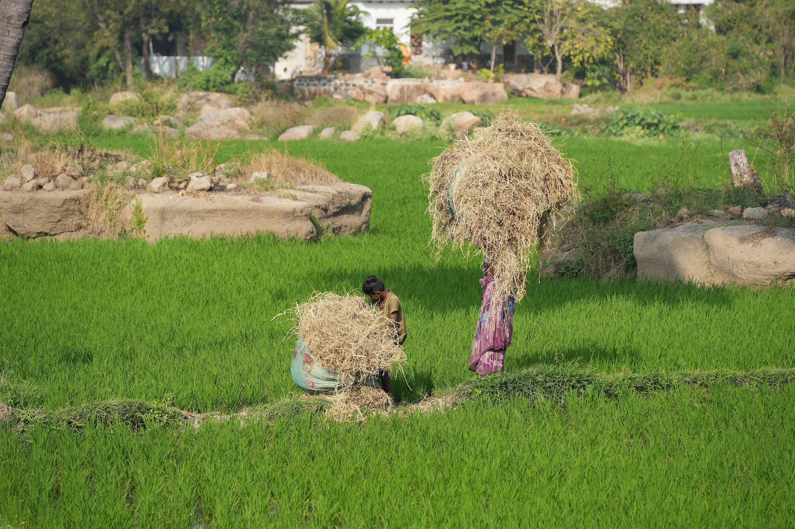

PRACTICAL FARMING SUPPORT
Make your next farm decision with clearer information.
SAgriVision AI brings seed identification and crop recommendation tools together in one place. Learn how the tools work, then use them as supporting information alongside your own field knowledge.

START HERE
Learn the workflow before you use a tool.
Short, searchable lessons explain the available pages, inputs, result language, and practical limits.
A CAREFUL START
AI support works best with local knowledge.
Results can help you ask better questions, but they do not guarantee crop success or replace an agricultural expert.